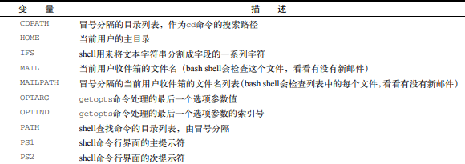
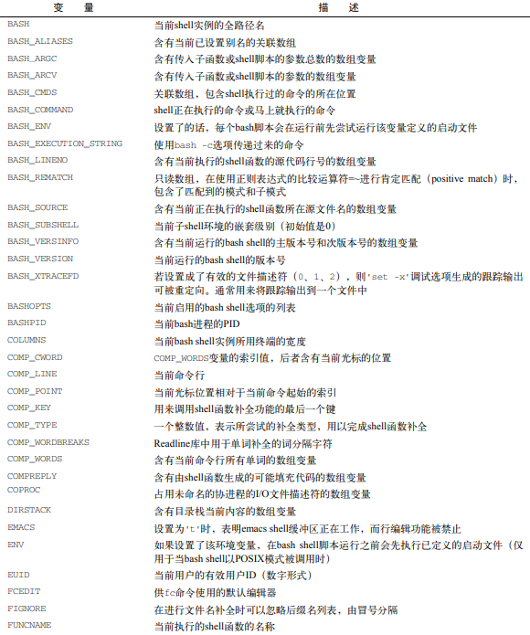
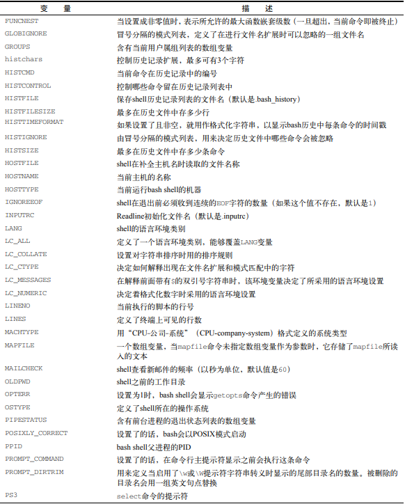
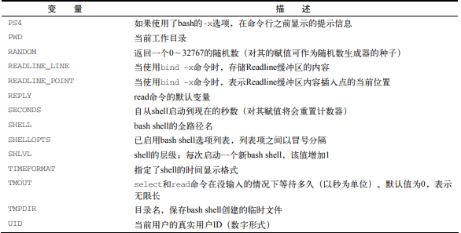

环境变量
系统默认环境变量
   
全局变量
shell会话及其所有子shell都可以使用全局变量
查看全局变量 - env | printenv
[root@server-test-211 kz]# env
XDG_SESSION_ID=2205
HOSTNAME=server-test-211
SELINUX_ROLE_REQUESTED=
TERM=xterm
SHELL=/bin/bash
HISTSIZE=1000
...
[root@server-test-211 kz]# printenv
XDG_SESSION_ID=2205
HOSTNAME=server-test-211
SELINUX_ROLE_REQUESTED=
TERM=xterm
SHELL=/bin/bash
...
查看某个环境变量 - printenv | echo
printenv [变量]|echo $[变量]
[root@server-test-211 kz]# printenv SHELL
/bin/bash
[root@server-test-211 kz]# echo $SHELL
/bin/bash
局部变量
局部变量只能在当前
shell会话（当前进程）中使用
查看局部变量 - set
set显示进程中的所有环境变量-全局变量、局部变量
[root@server-test-211 kz]# set
设置局部变量|用户定义变量
系统环境变量默认大写，自定义变量使用小写格式定义变量
[root@server-test-211 kz]# iuse='Hello'
[root@server-test-211 kz]# echo $iuse
Hello
[root@server-test-211 kz]# iuse=Hello-World
[root@server-test-211 kz]# echo $iuse
Hello-World
# 没有引号且包含空格时，会当成被 命令
[root@server-test-211 kz]# iuse=Hello World
bash: World: command not found...
设置全局变量
全局变量通过
export局部变量到全局环境中。导出到全局环境的变量，不受局部变量修改的影响
[root@server-test-211 kz]# iuse='Hello World'
[root@server-test-211 kz]# export iuse
# 查看是否已写入全局环境
[root@server-test-211 kz]# printenv
XDG_SESSION_ID=2205
HOSTNAME=server-test-211
....
HOME=/root
iuse=Hello World
删除变量 - unset
[root@server-test-211 kz]# unset iuse
[root@server-test-211 kz]# echo $iuse